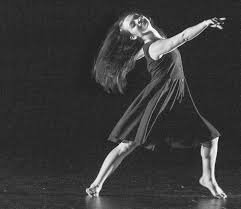
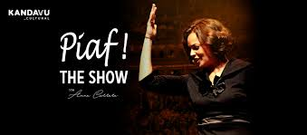
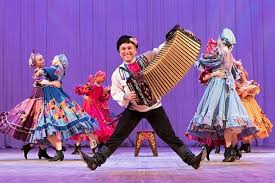

CATEGORÍA: ARTE Y CULTURA
RELACIÓN DE EVENTOS
La relación de eventos próximos es la siguiente:

RELATO AMAZÓNICO: Ballet Folcklórico nacional
- Organizador del evento
- Gran ballet nacional
- Lugar:
- Lima
- Fecha y Hora:
- Viernes 10 de julio, 8:00 pm
- Costo de la entrada:
- 25 soles

PIAF! THE SHOW
- Organizador del evento
- Joinnus
- Descripción:
- Piaf! the Show es un espectáculo que narra la fascinante historia de la legendaria Edith Piaf narrada a través de sus inolvidables temas como “Non, je ne regrette rien”, “La vie en Rose”, “La Foule”, “Milord”, y más. Estas son interpretadas por Anne Carrere, una joven cantante francesa aclamada como la "heredera musical legítima de Edith Piaf"
- Lugar:
- Gran Teatro nacional
- Fecha y Hora:
- Sábado 6 de junio, 8:00 pm
- Costo de la entrada:
- 30 soles

BERIOZCA: El Mejor Ballet del Mundo
- Organizador del evento
- Joinnus
- Descripción:
- El mejor ballet folclórico del mundo regresa a Lima con un nuevo repertorio. En esta oportunidad la delegación de 50 artistas presentarán bailes clásicos, escenas de danzas de humor, y acrobacias.
- Lugar:
- Gran Teatro Nacional
- Fecha y Hora:
- Domingo 3 de mayo, 11:00 pm
- Costo de la entrada:
- 15 soles
REGRESAR A PÁGINA PRINCIPAL